linux_pwn_start
二进制—linux篇
介绍
逆向
二进制正常情况下,我们不容易获得执行文件的源码, 因此需要用到“逆向”来分析执行程序来寻找漏洞, 所以“逆向”的作用是尽可能把binary->source code.
那逆向分析技术主要分成static和dynamic, (Linux底下)
static analysis: 分析静态程序,程序不需要运行, 如: objdump 把machine code转成asm汇编代码
dynamic analysis: 运行程序来动态分析, 如strace: trace all system call, ltrace: trace all library call
strace:看看调用了哪些system
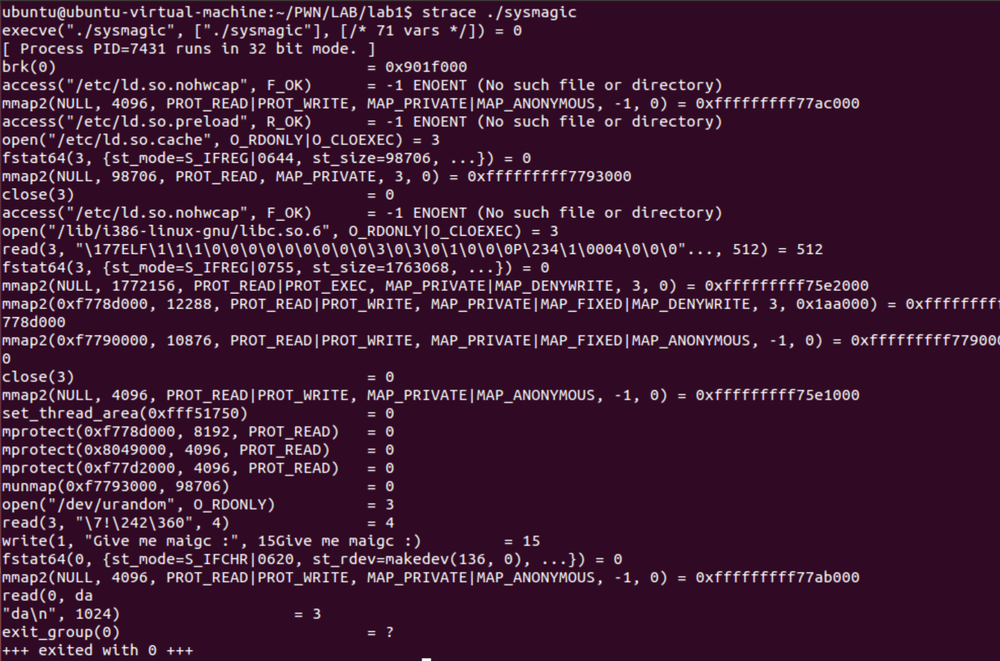
ltrace: 看看调用了哪些libc
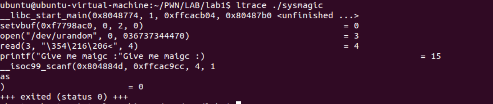
攻击
vulnerability->control flow
利用分析完程序找到的漏洞来达到攻击者的目的, 正常来说最终目的是为了取得程序控制权.
常用工具
IDA Pro
GDB: GNU project debugger
GDB命令
run -执行(r)
disas function name -反编译某个function
break *0x08048014 -设置断点
info breakpoint -查看已经设定哪些中断点
info register -查看所有register状态
gdb -n 不用plug-in script
gdb -q 不显示版本信息等
x/wx address -查看address中的内容
W可换成b\h\g分别是1\2\8 byte
/后可接数字, 表示一次列出几个
第二个x可换成u\d\s\i以不同方式表示
u:unsigned int
d:10进制
s: 字串
i: 指令
ni -下一条指令next instruction(执行完函数)
si -步入step into(跳进函数)
backtrace -显示上层所有stack frame的资讯
continue -继续执行程序
set address=value
将address中的值设成value, 一次设成4 byte
可将换成{char\short\long}分别设定1\2\8 byte
set *0x0804a060=0xdeadbeaf
set {int}0x0804a060=1337
在有debug symbol下
list: 列出source code
b可直接接行号断点
Info local:列出区域变量
print val:打印变量val的值
attach pid :attach一个正在运行的process
配合ncat进行exploit的debug: ncat -ve ./a.out -kl 8888
注意的是,要切成root把yama下面的ptrace_scope设置成0, 这样才有权限attach一个程序: echo 0 > _proc_sys_kernel_yama/ptrace_scope
gdb-peda: python写的一个gdb的plug-in
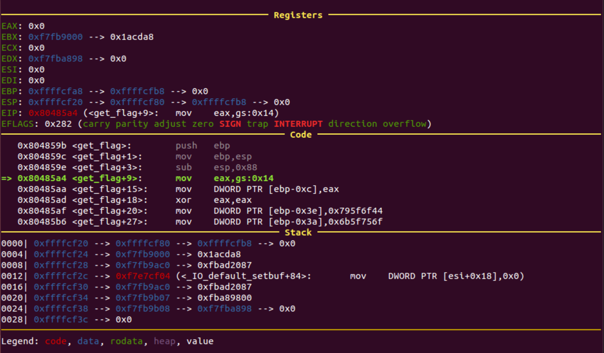
https://github.com/longld/peda
angelboy https://github.com/scwuaptx/peda
checksec:查看程序有哪些保护机制
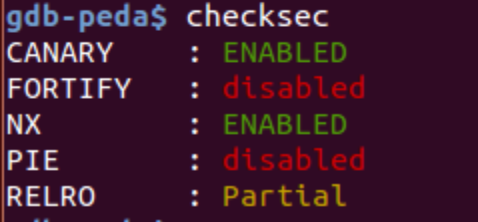
elfsymbol:查看function .plt, 做ROP非常需要(plt稍后介绍)
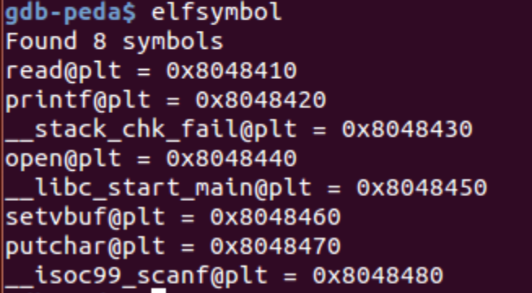
vmmap:查看process mapping, 观察每个address中的权限
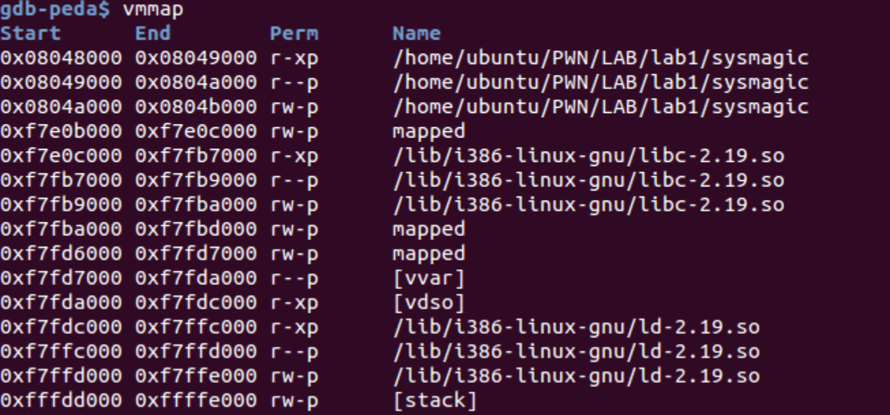
readelf:查看section位置, 比如ret2dl_resolve攻击需要用到
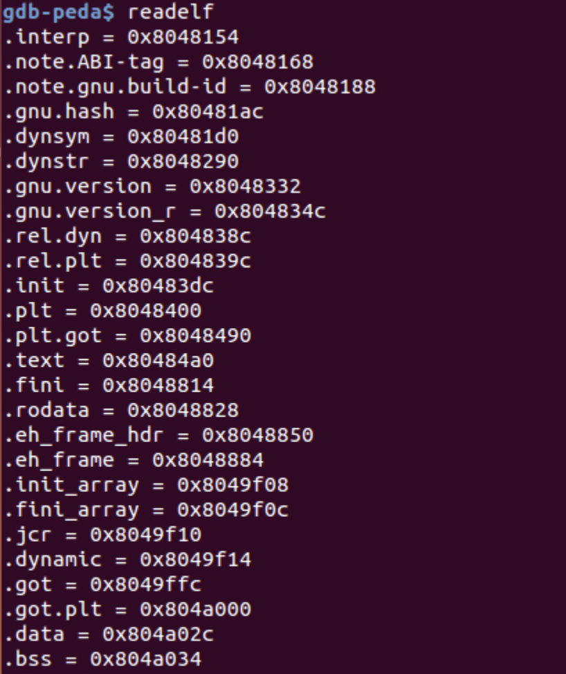
find (alias searchmem)
search memory中的pattern
通常用来找字串,比如“_bin_sh”
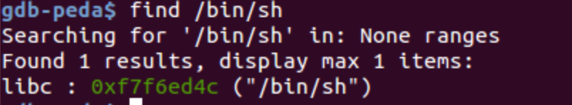
Record: 记录每个instruction 让gdb回溯前面的指令, 在PC被改变后, 可利用该功能追回原本发生问题的地方
Pwntools
用python写的拿来写exploit用的库
1 | from pwn import * |
Lab1:
学会如何使用gdb
要满足magic==password, 有两种方法:
一是使用等待调用read后查看内存中的password, 然后输入一样的值即可满足.
二是运行时改变对比时对应寄存器的值, 就满足.
编译compile
略
执行execution
二进制文件格式
执行文件, 也就是二进制文件, 会根据OS不同而有所不同:
Linux对应ELF文件
Windows对应PE文件
Mac对应Mach-O文件
Binary文件开头会有个magic number栏位. 方便让OS分辨属于什么类型文件
Linux下用file命令可以查看是怎样的文件类型
Segment
程序执行时候才会有的概念, 基本上会根据读写执行权限及特性来分成数个segment
一般可分为rodata, data, code, stack, heap等segment
1 | data: rw- |
执行流程
当我们执行文件时候发生了什么:
$ ./hello
一般情况下程序会在disk中, 而系统kernel会通过一连串的过程将程序mapping到内存中去执行
static link 执行流程:
._hello -> fork() -> execve(“._hello”, *argv[], *envp[]) -> sys_execve() -> do_execve() -> search_binary_handler -> load_elf_binary() -> _start -> main
Dynamic link 执行流程:
._hello -> fork() -> execve(“._hello”, *argv[], *envp[]) -> sys_execve() -> do_execve() -> search_binary_handler -> load_elf_binary() -> ld.so -> _start -> _libc_start_main -> _init -> main
shell执行一个elf时, 会先去fork一个process, 这个child process 会再去使用execve执行, 然后进入kernel mode
实际上kernel mode中间会有很多function, 这里提出几个主要function:
sys_execve():
检查参数argv, envp类型是否正确
do_execve():
搜寻文件位置(有没有这个文件存在), 读取文件前128byte来获取文件的信息, e.g. Magic number
search_binary_handler():
利用前面所获取的信息来呼叫相对应的handler e.g. load_script(), load_elf_binary()
load_elf_binary():
检查和获取program header信息
如果是dynamic linking则用.interp这个section来确定loader的路径, 因为程序跑起来通常都会有loader负责把所需的library载入进来
将program header记录的位置mapping到memory中, header会记录哪一段section mapping到哪个地方, 哪些section属于哪些segment, e.g. code segment位置
将sys_execve的return_address改成loader(ld.so)的entry point, static link下就是elf的entry point(就是start的位置)
那程序如何mapping到虚拟内存中
- 在program header中, 记录着哪些segment应该mapping到哪些位置, 以及该segment的读写执行权限
- 记录哪些section属于哪些segment
- 当program mapping内存时会根据权限的不同分成好几个segment
- 一个segment可以包含0到多个section
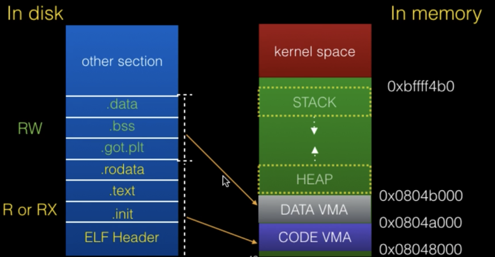
readelf -l binary :查看program header
readelf -S binary :查看section header
readelf -d binary :查看dynamic section内容
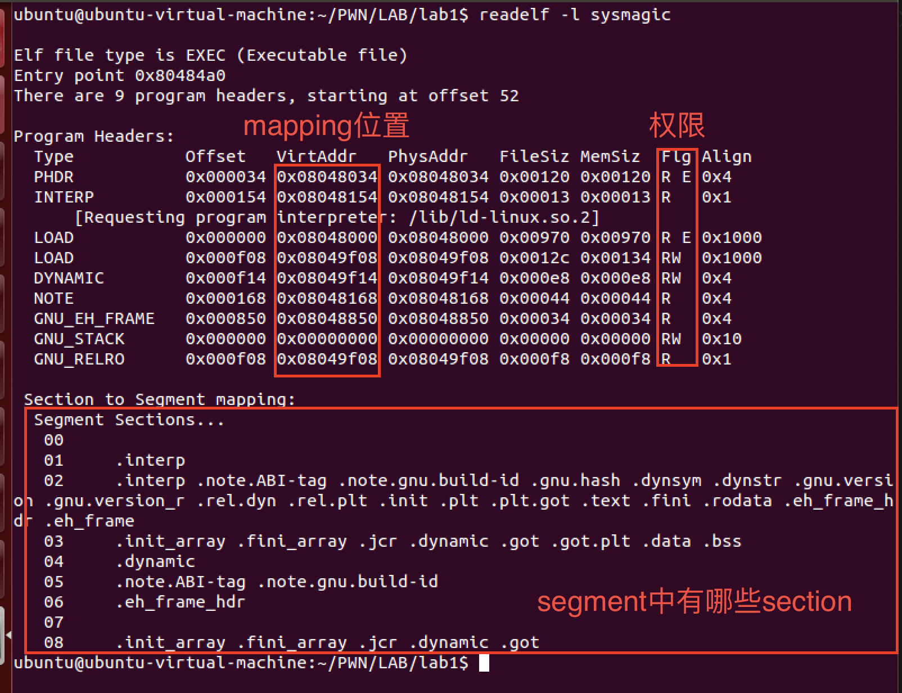
ld.so
- 载入elf所需的shared library, 通常会载入如libc.so, 还需要其他什么so会记录在elf中的DT_NEED中, (用ldd就可以看到这elf需要载入什么library)
- 初始化GOT
- 其他相关初始化的动作, 比如将symbol table合并到global symbol table等
- 对实际运作过程有兴趣可参考elf/rtld.c, 很大一部分用汇编写的, 不太容易看懂, 做了很多非常重要的事情
在ld.so执行完后会跳到_start开始执行主要程序:
_start -> __libc_start_main -> .init -> main -> .fini -> exit
_start将下列项目传给libc_start_main: 环境变数起始位置, main的位置(通常第一个参数), .init这个section位置(呼叫main之前的初始化工作), .fini这个section位置(程序结束前的收尾工作)
x86 汇编
寄存器:
通用寄存器general-purpose registers
EAX EBX ECX EDX - 32 bit
AX BX CX DX - 16 bit
AH BH CH DH - 8 bit (high)
AL BL CL DL - 8 bit(low)
Buffer pointer
EDI ESI - 32 bit
DI SI - 16 bit
Stack Pointer
ESP - 32 bit
指向stack顶端
Base Pointer
EBP - 32 bit
指向stack底端
ESP到function参数范围称为该function的stack frame:
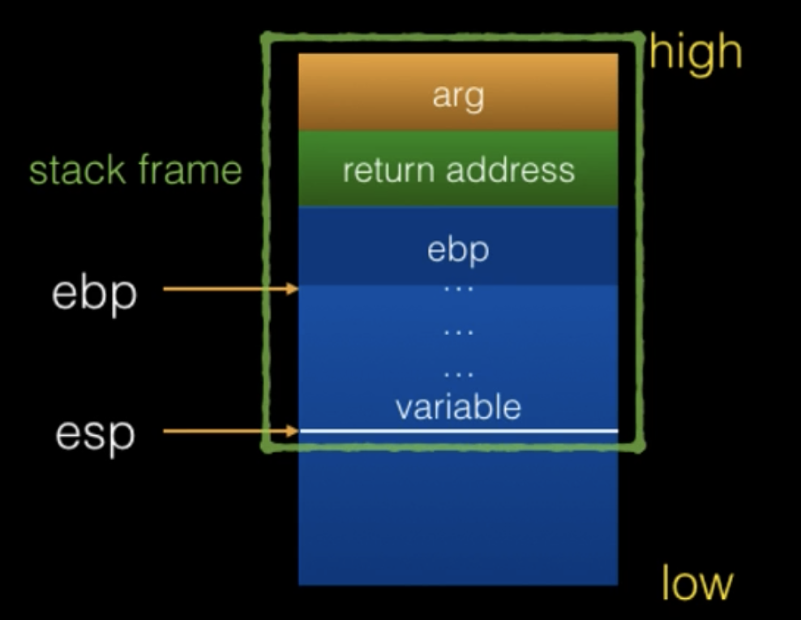
区域变量存放在ebp和esp之间
Program counter register
EIP
指向目前程序执行的位置
Flag register
eflags
储存指令(如cmp)执行结果
Segment register
cs ss ds es fs gs
x86汇编语言有AT&T, Intel两种格式
AT&T: mov %eax, %ebx
Intel: mov ebx, eax
mov
- mov imm_reg_mem value to reg/mem
- mov A,B (mov B to A)
- A与B的size要相等
add_sub_or_xor_and
- add_sub_or_xor_and reg, imm/reg
- add_sub_or_xor_and A,B
- A与B的size一样要相等
push/pop
- push/pop reg
- push eax = sub esp, 4; mov [esp], eax
- pop ebx = mov ebx, [esp]; add esp, 4
lea
- lea eax, [esp+4]
lea vs mov
- lea eax, [esp+4] vs mov eax,[esp+4]
- assume
- eax=3
- esp+4=0xbfff7488
- [esp+4]=0xdeadbeaf
- lea:eax=0xbfff7488 mov:eax=0xdeadbeef
jmp_call_ret
改变eip指令
- jmp跳至程序码的某处去执行
- call eax = push 下一行指令位置;jmp eax
- ret = pop eip
leave
- mov esp, ebp; pop ebp
nop
- 一个byte不做任何事
- opcode=0x90
system call
- instruction : int 0x80
- eax : system call number / return value 放在这里
- ebx, ecx, edx, esi, edi : argument 按顺序放参数
System call table
https://w3challs.com/syscalls/?arch=x86
calling convention
- function call
- call : push return address 下一行指令 to stack then jump
- function return
- ret : pop return address
- function argument
- x86下一般使用stack传递, 但是也有用register传递没有强制规定
- 依序push进stack后, 再去执行function call
- function prologue
- compiler在function开头加的指令, 主要在保存ebp, 并且分配区域变量所需空间.
1
2
3push ebp
mov ebp,esp
sub esp,0x30
- compiler在function开头加的指令, 主要在保存ebp, 并且分配区域变量所需空间.
- function epilogue
- compiler在function结尾加的指令, 主要在利用保存的ebp恢复call function时的stack状态
1
2leave
ret
- compiler在function结尾加的指令, 主要在利用保存的ebp恢复call function时的stack状态
写汇编语言程序:
nasm -felf32 hello.s -o hello.o
ld hello.o -melf_i386 -o hello
看不懂system call参数要干嘛的话, 就用man 2 systemcall 看详细参数要求
shellcode
- 攻击者主要注入程序码后目的为拿到shell, 故称为shellcode
- 由一系列的machine code组成, 最后目的可做任何攻击者想做的事
shellcode就是把汇编语言的opcode(机器码)组合起来,如下图
objdump -d -M intel hello
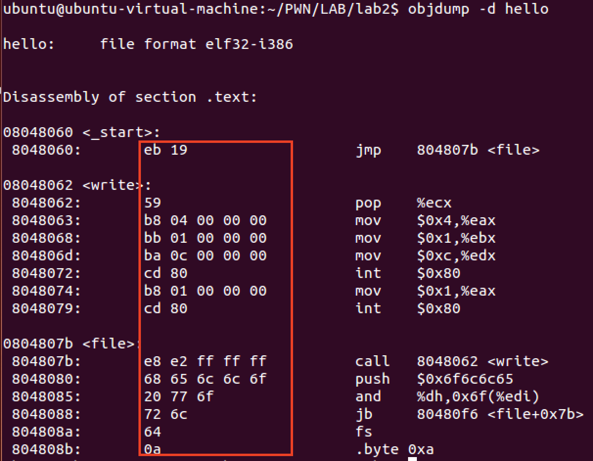
产生shellcode的办法:
- objcopy -O binary hello.bin shellcode.bin, 然后xxd (-i)来看
- using Pwntool : http://docs.pwntools.com/en/stable/asm.html
- Pwntool binutils: http://docs.pwntools.com/em/stable/install/binutils.html
local端测试shellcode:
gcc -m32 -z execstack tes.c -o test (execstack 就是让stack可以执行, NX关掉)
gdb ./test
Buffer Overflow
什么是buffer overflow? 程序设计师并未对buffer做长度检查, 造成可以让攻击者输入过长的字串, 覆盖内存上的其他资料(比如说return address), 严重时可控制程序流程.
依照buffer的位置可以分为:
- stack base (stack smashing粉碎)
- data base (global variable)
- heap base
vulnerable function:
1 | gets |
Return to Text
Lab
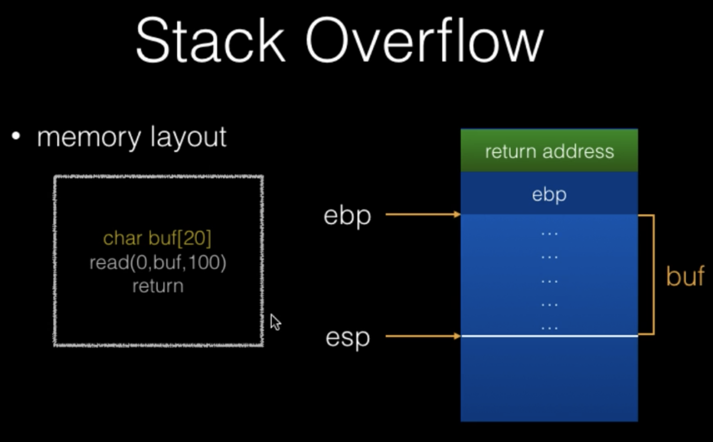
from crash to exploit:
- 随便任意输入一堆字串都能造成crash
- 适当地构造输入, 就可巧妙地控制程序流程
- 比如, 构造输入覆盖return address就可在函数返回时跳到攻击者想要的address处
- 因为x86架构是little-endian的, 所以填入address时, 需要反过来填
- 比如, 要填入0x080484fd就需要填入\xfd\x84\x04\x08
- pwntools就是用p32(0x080484fd)
定位return address在哪的办法:
pwntools, cyclic(100)生成4个byte都不重复的字串, 就可以丢进输入, 然后gdb看到return address是哪个, 然后用cyclic_find(“xxxx”)得到offset偏移值
如何写exploit:
shell下方法:
echo -ne “aaaaaaaaaaaaaaaaaaaaaaaaaaaaaaaabbbb” > exp
cat exp - | ./bofeasy
程序挂端口:
ncat -ve ./bofeasy -kl 8888
pwntools:
1 | form pwntools import * |
debug:
ps aux | grep .bofeasy
gdb下attach 对应pid
Return to Shellcode
如果在data段上是可执行且位置固定的话, 我们也可以在data段上塞入shellcode然后跳到shellcode进行执行.
lab3 ret2sc
name是global variable, 编译后是固定位置 (如果没有开PIE的情况下)
NX是关的, global buff是可以执行的
然后栈溢出, 定位return address出来
nm ret2sc来定位name的位置(也就是我们输入的shellcode位置)
或者gdb下 x/x &name
保护Protection
在linux底下对buffer overflow有什么保护机制?
这里介绍4个:
ASLR (Address space layout randomization)
- 内存位置随机变化
- 每次执行程序时, stack、heap、library位置都不一样
- 查看是否开启ASLR: cat _proc_sys_kernel_randomize_va_space (0代表关, 1,2,3代表强度)
每次执行的位置都会变化, 如下图: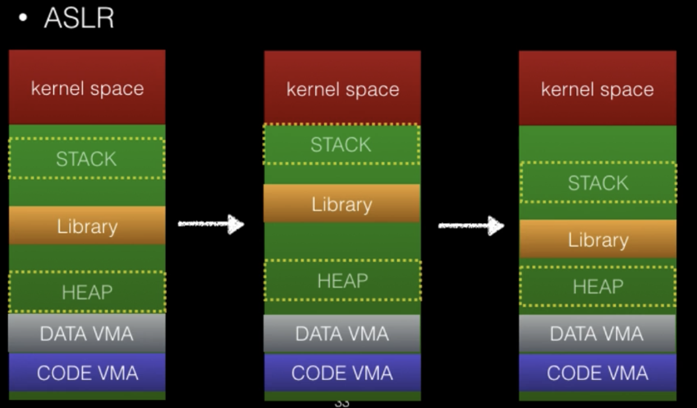
也可使用ldd(可看执行时载入的library及其位置)观察address每次都变化
DEP (Data Execution Prevention)
又称为NX (No-Execute), 可写的不可执行, 可执行的不可写 (gdb下的vmmap可以看哪些区段可以执行或写)
PIE (Position Independent Execution)
gcc在默认情况下不会开启, 编译时需要加上 -fPIC -pie 就可以开启- 在没开启的情况下程序的data段及code段会是固定的位置
- 一旦开启之后, data及code也会跟着ASLR, 因此前面说的ret2text/shellcode没有固定位置可以跳, 就变得困难许多.
- objdump观察pie开启的binary, code address只剩下offset,执行后才会加上code base, 才是真正在内存中的位置
StackGuard
- 在程序执行时随机生成一个乱数function call时候塞入stack中, 在function return 时会检查是否该值(canary)有被改变, 一旦发现被改变就结束该程序.
- 默认情况下是开启的, 非常有效地阻挡stack overflow攻击
- canary这个值在执行期间会先放在,一个称为tls的区段中的tcbhead_t结构中, 而在x86/x64架构下恒有一个暂存器指向tls段的tcbhead_t结构:
- x86:gs
- x64:fs
- 因此程序在取canary值时都会直接以fs/gs做存取
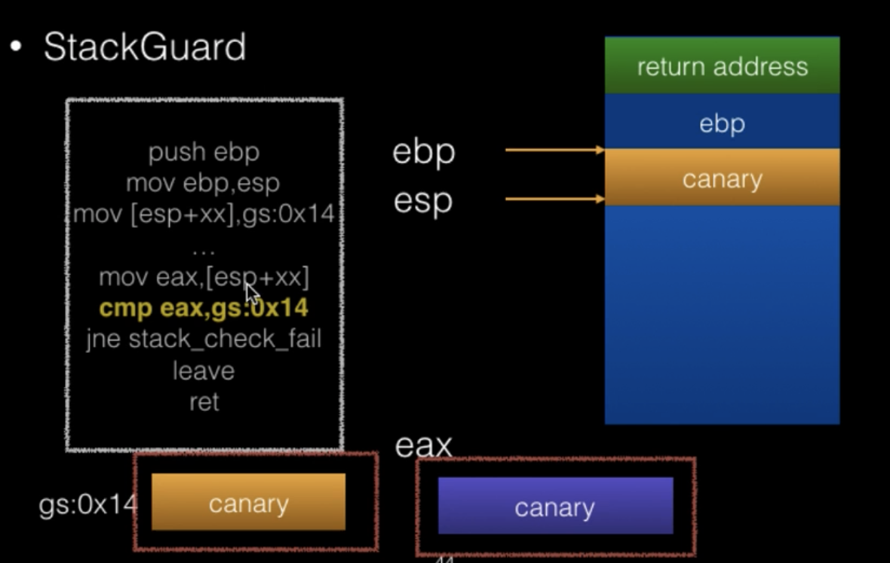
Lazy binding
dynamic linking的程序在执行过程中, 有些library的function可能到结束都不会执行到. 所以ELF采取Lazy binding的机制, 在第一次call library的function时, 才会去寻找function真正的位置进行binding.
library的位置在载入后才决定, 因此无法在compile后, 就知道library中的function在哪, 该跳去哪.
GOT (Global Offset Table) 为一个function指标阵列, 储存其他library中function的位置, 但因为lazy binding的机制, 并不会一开始就把正确的位置填上, 而是填上一段plt位置的code.
当执行到library的function时候才会真正去寻找function, 最后再把GOT中的位置填上真正function的位置
GOT分成两部分:
.got :保存全局变量引用位置
.got.plt :保存library function引用位置
- 前三项有特别用途:
- address of .dynamic (dynamic section的位置)
- link_map
- 一个将有引用到的所有library所串成的linked list
- dl_runtime_resolve
- 用来找出function位置的函数 (function pointer)
- 后面则是程序中的.so函数引用位置
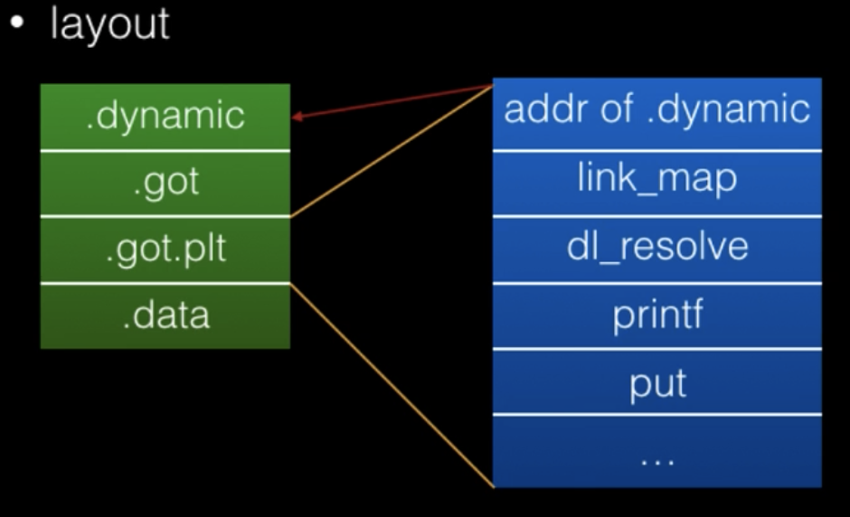
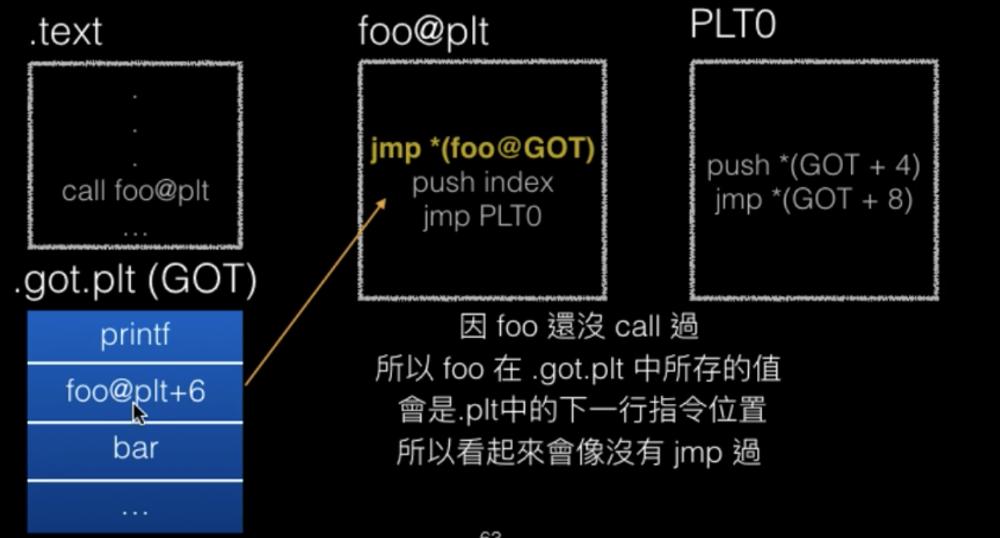
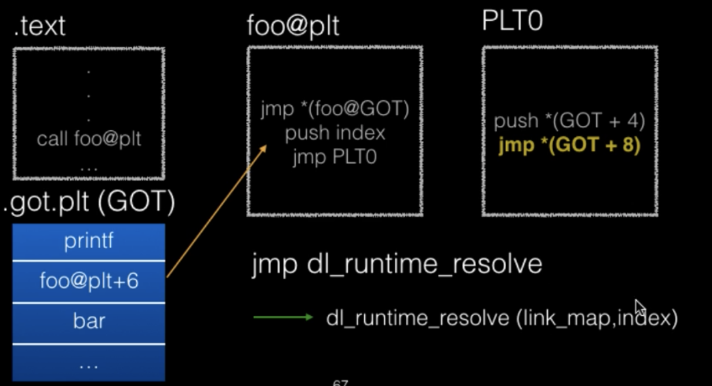
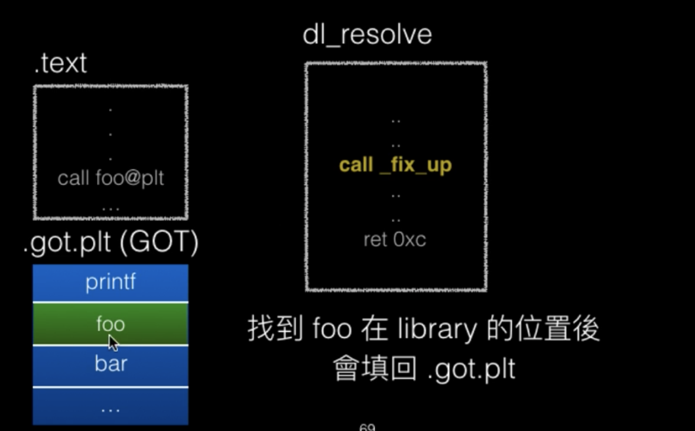
如何找到GOT位置:
objdump -R elf 或者 readelf -r elf
GOT劫持攻击:
因为为了实现lazy binding的机制, GOT位置必须是可写入的.
因此如果程序有存在任意更改位置的漏洞, 便可改写GOT, 造成程序流程的改变, 也就是控制了EIP.
那如何保护GOT呢?
RELRO (Relocation Read-Only)
有三种状态:
- Disabled:
.got/.got.plt 都可写 - Partial (Default)
.got只读, .got.plt可写 - Fulled
RELRO下, 会在load time时将全部function resolve完毕, 把GOT变成read-only, 就完全防止了GOT劫持
Return to Library
一般正常情况下程序中很难有system等, 可以直接获得shell的function. 并且在DEP/NX的保护下我们也无法直接填入shellcode来执行我们的程序码.
但是在dynamic linking情况下, 大部分程序都会载入libc, libc中有非常好用的function可以达成攻击的目的, 如system, execve ….
但是一般情况下又会因为ASLR的关系, 导致每次libc载入位置不固定, 所以我们通常都需要information leak的漏洞来获取libc的base address, 从而算出system等function位置, 再将程序导过去.
通常可以获得libc位置的地方:
- GOT, 因为GOT会放resolve过函数的位置.
- Stack上的残留值: function return后并不会将stack中的内容清除.
- heap上的残留值: free完之后在malloc, 也不会将heap存的内容清空.
一般情况下的ASLR都是整个library image一起移动, 因此只要有leak出libc中的位置, 通常都可以算出libc全部function位置
我们可以利用objdump -T libc.so.6 | grep function来找想找的function在libc中的offset.
如果我们获得了printf位置, 可先找到printf在libc中的offset以及想要利用的function offset.
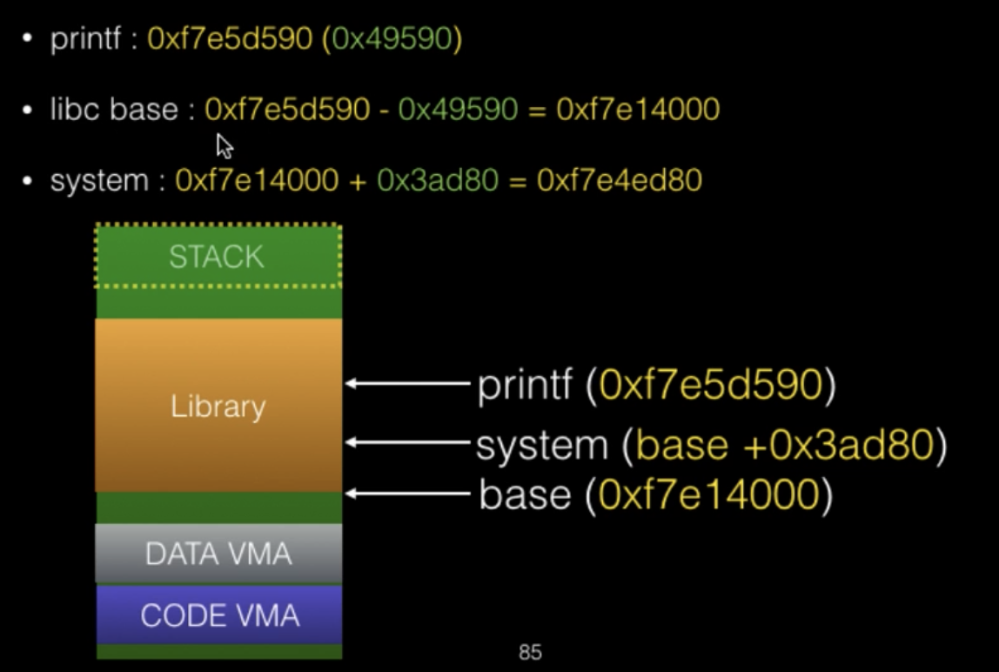
ldd ret2lib 找到libc文件位置, 然后再用objdump -T libc文件位置, 然后再找到目标function的偏移值.
获得system位置之后, 我们可以复写return address跳到system上, 这边要注意的是参数也要一起放上,
此时也要注意多空一格, 因为我们要利用ret而不是call, 一般call之后会push一个return address进去stack, function取参数会空一格再取.
“_bin_sh”字串位置也可以在libc中找到, 因此当程序没有该字串时候, 从libc中找, system参数只要“sh”即可, 因此也只找“sh”字串就行
lab ret2lib
先用objdump -R ret2lib找到一个GOT函数比如puts@plt的位置.
然后send过去, 获取puts真正的libc位置.
通过ldd ret2lib找到libc文件位置, 然后再用objdump -T libc文件位置, 找到puts的offset和system offset.
再在gdb底下通过find sh来获取存有“sh”的字串位置
最后通过buffer overflow覆盖return address成功获取shell
ROP (Return-oriented Programming)
- static link ROP
- Using ROP bypass ASLR
- Stack migration
通过Buffer overflow, 盖掉return address后跳到其他地方去执行, return to text就是跳到程序里的function来执行, return to lib就是跳到library里面去执行, ROP就是另外一种变形, 同样也是利用程序里的code段, 会跳到ret之前几个指令, 执行完这几个指令后再利用ret. 这些code片段就称为ROP gadget.
为什么我们需要ROP?
- Bypass DEP
- static linking can do more thing,因为static link会把整个library都变到binary里面, 所以里面有非常多的ROP gadget, 所以我们能做的事情会非常多.
- ROP chain
- 在够长的buffer overflow后stack内容几乎都由我们控制, 我们可以借由ret = pop eip指令, 来持续的控制eip
- 由众多的ROP gadget组成, 借由不同的register及内存操作, 呼叫system call达成任意代码执行
- 基本上就是利用ROP gadget来串出我们之前写的shellcode的效果
Gadget:
- read_write register_memory:
- pop eax; pop ecx; ret
- mov [eax], ecx; ret
- system call
- int 0x80 / sysenter
- change esp
- pop esp; ret
- leave; ret
Write to Register:
pop reg ; ret
mov reg, reg ; ret
Write to Memory:
mov [reg], reg
mov [reg+xx], reg
execve(“_bin_sh”, NULL, NULL)
- write to memory
- 将“_bin_sh”写入已知位置内存中
- 可分两次将_bin_sh写入内存中
- write to register
- eax=0xb, ebx=address of “_bin_sh”
- ecx=0, edx=0
- int 0x80
how to find gadget
https://github.com/JonathanSalwan/ROPgadget
ROPgadget - - binary binary
ROPgadget - - ropchain - - binary binary
在static link情况下通常可以组成功execve的rop chain但通常都很长, 需要自己找更短的gadget来改短一点.
lab simpleROP
file simplerop看下是static link还是dynamic link, 发现是static
然后找到return address的offset
最长的ropchain就只能用68个字节
readelf找到data段位置来写入“_bin_sh”
然后找一个写内存的gadget
0x0809a15d : mov dword ptr [edx], eax ; ret
再找对应pop 寄存器的gadget
0x080bae06 : pop eax ; ret
0x0806e82a : pop edx ; ret
0x0806e850 : pop edx ; pop ecx ; pop ebx ; ret
0x080493e1 : int 0x80
context.arch=“i386”
rop=flat([0x1234, 0x5678]) 等同于 rop=p32(0x1234)+p32(0x5678)
之后就是写入”_bin”, 和“_sh\x00”
然后设置好eax, ebx, ecx, edx
然后调用int 0x80完成
Dynamic情况下, 用ROP绕过ASLR
假设dynamic编译的程序中有bufferoverflow的漏洞且在没PIE的情况下 (先不考虑stackguard的情况)
how to bypass ASLR and DEP?
- Use .plt section to leak some information
- 通常一般程序中都会有put、send、write等output function
Bypass PIE:
- 必须比平常多leak一个code段的位置, 借由这个值算出code base进而推出所有GOT等信息
- 有了code base之后其他就跟没有PIE的情况下一样
Bypass StackGuard
- canary 只有在function return时候做检查
- 只检查canary值是否一样
- 所以可以先想办法leak出canary的值, 塞一摸一样的内容就可bypass, 或是想办法不改动canary也可以
- 在fork中, child的canary和memory mappings和parent一模一样
Stack migration
- 将ROP chain写在已知固定位置上
- 再利用leave搬移stack位置到已知位置上
- 可无限接ROP chain
- 必须注意到Migration之后stack要留大·一点, 有些function可能会需要很大的stack frame, 太小可能会存取到只读区域, 导致segmentation fault
- 若能妥善利用, 没有libc情况下, 有机会将整个libc给dump出来, 更有机会直接找出system的位置
- 无限ROP, 几乎可以做出所有事情, 但唯一要注意的是buf大小要控制好, 尽量选择bss后半段位置, 否则可能因为stack不够大而segment fault
Other migration gadget:
- add esp, 0xNN ; ret
- sub esp, 0xNN ; ret
- ret 0xNN
- xchg esp,exx ; ret
- partial overwrite ebp
lab migration
拿来看GOT
objdump -d -M intel -j .plt.got migration
一一对应下来:
objdump -R migration
就可以找到各lib函数的plt
首先先确定overflow盖掉return address的offset
不能直接盖掉return addres, offset后面4个byte是ebp, 要控制ebp部分
找到可控的buff来做stack migration, 第一段buff
readelf找到data段位置, 先从data段最后面开始用
第一次执行, 要把第二段的rop读进去所以要call read@plt.
elfsymbol找到read@plt、put@plt的位置
read后要找leave, ret来转到另一个rop
所以用ROPgadget来找到leave, ret的gadget
这里填完read@plt参数后发现刚好用完多余的16byte也就是4个gadget
100个字节刚好满了, 所以用r.send就行
两次send中间没有output的话, 会习惯用个sleep(0.1)一下, 有的时候IO问题导致send会连在一起
接下来就是写入要设置好的stack rop,
然后接下一个ebp位置, 盖成第三段的rop位置放进去
然后用put@plt读出put_got位置, 然后再用read写入第三段的rop
格式化字符串
- format string
- read from arbitrary memory
- write to arbitrary memory
- advanced trick
什么是格式化字符串? 输出或字符串处理函数中, 用来表示输出格式的字符串
像是printf中常用的%s, %d等
其他常见的function
- sprintf
- fprintf
正常情况下, 一个%(s|d|x..)应该要对应到一个参数, 例如printf(“%d %d”, a, b)
若没有适当对应好, 可能就会造成information leakage
printf(“%p %p”,a)
- 多出来的%p会存取到一些内存上的信息
错误的使用方式:
- format strings的内容是由使用者可控的, 这样会造成任意内存读写.
- read(0,buf,0x100);printf(buf)
编译时基本上会有warnning但一般使用者通常会忽略他
如何做到任意内存读写呢?
- printf(“%3$p”)
- %*$是指定p要读第几个参数, %3$p代表要读printf后第3个参数, 并用格式p印出来.
- printf也不会检查参数个数是否有match, 所以要读多远都可以
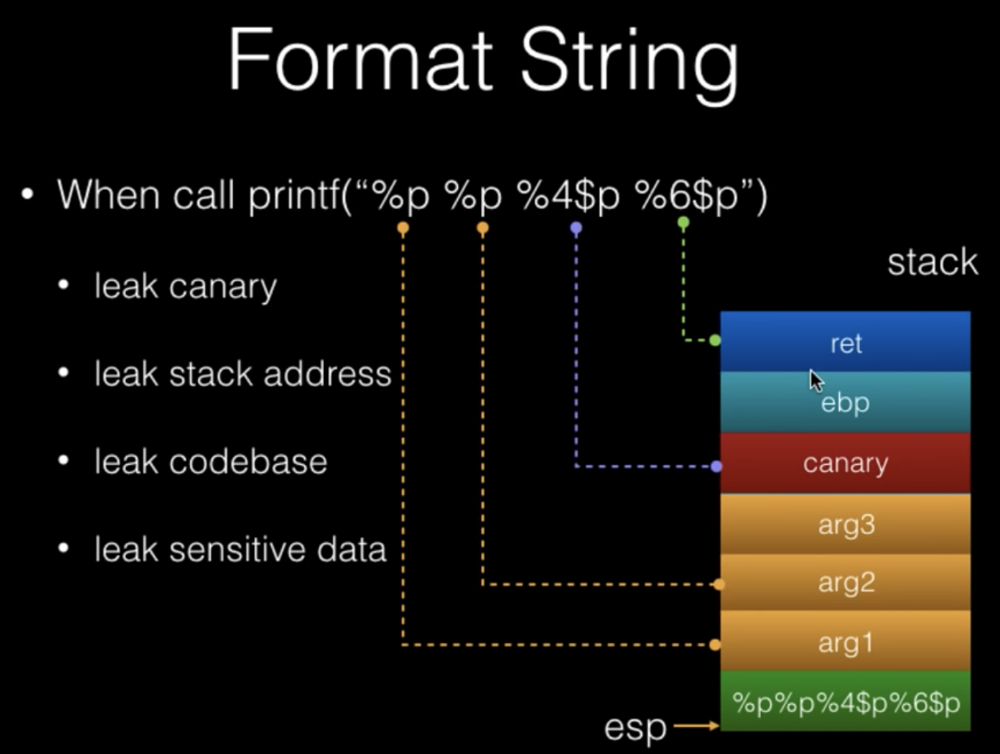
如何做到任意读取内存呢?
假设在stack上如果有可控address的buffer时, 可以利用%s来将该address做dereference将内容当成字符串印出来.
假设format string也在stack上, 那么在做format string的时候, 可以同时将address放入, 当成pointer使用, 这样就可以做到任意读写
但是addres内容不可有NULL byte否则format string会被中断, 可以将address改放到后面来避免这个问题, 但是padding要算好
printf(“\xef\xbe\xad\xde%4$s”)
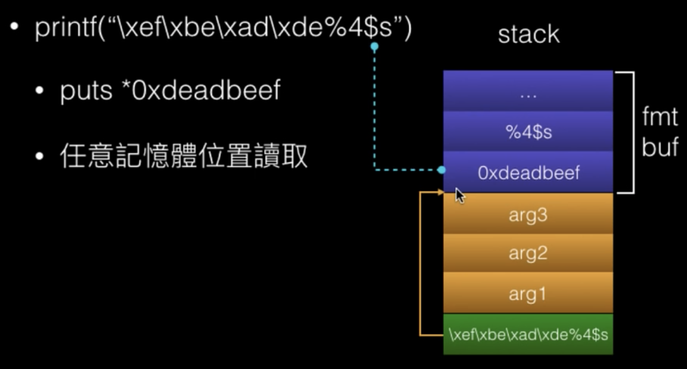
printf(“%5$s\x00\xbe\xad\xde”)
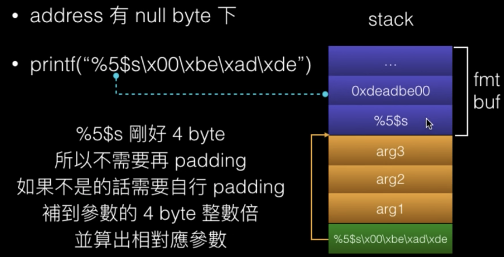
上面都可以拿来leak libc位置
- 在前面的状况下, 可以利用填入got后用%s来leak libc的位置
- 而另一种方式则是利用_libc_start_main的return address来计算出libc的位置, 如下图所示
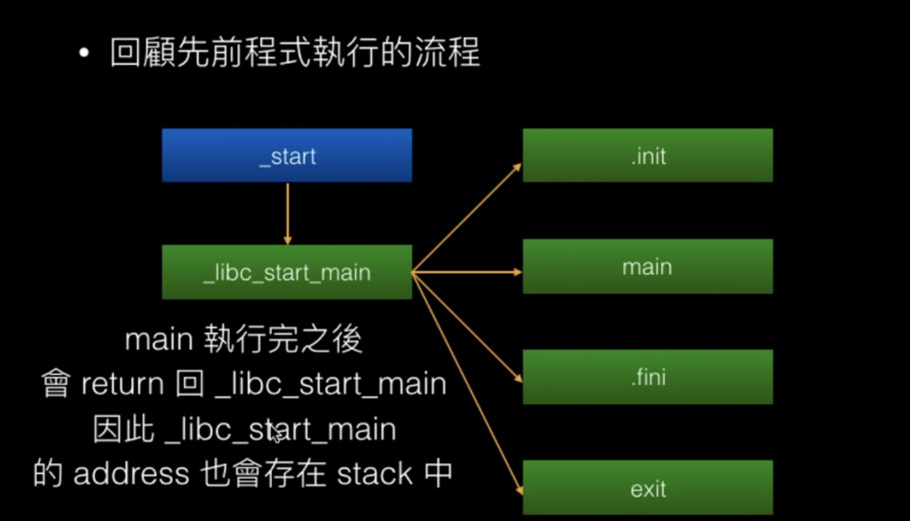
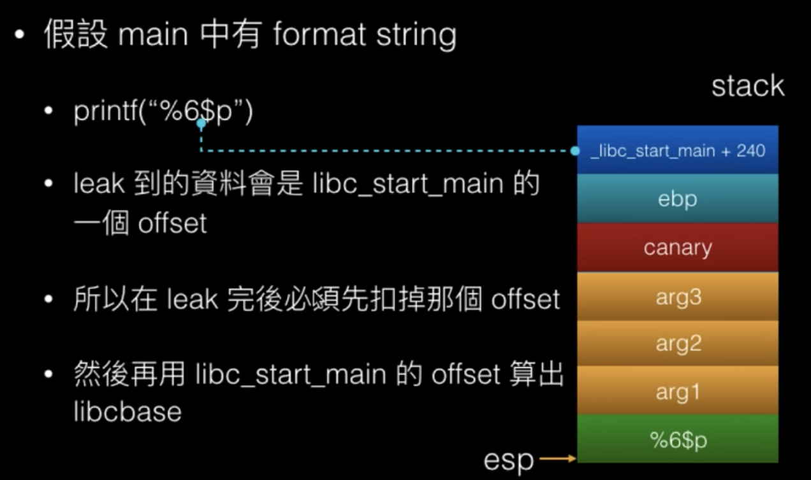
如何做到任意内存写呢?
- %n可以对特定参数写数值, 写入的值为目前已显示的字元数
- “12345%3$n”表示对第三个参数写入len(“12345”)=5这个数值
- 可以配合%c来做写入
- %xxc为印出xx个字元到荧幕上
- “%123c%3$n”表示对第三个参数写入123这个数值
问题来了, 因为%n写入大小为一个int的大小, 而我们若要在GOT写上一个address大小时候, 需要印出非常大的字元数量, 输出时间会非常久.
所以我们可以利用%hn或者是%hhn来进行写值
- %hn针对参数写2个byte(short)的数值
- %hhn针对参数写1个byte(char)的数值
通常我们在对GOT写值时候, 并不会单纯一次写了一个byte就结束, 因为很有可能再做下一次format string时会先呼叫到该function的GOT有可能就会坏掉
所以通常我们会再一次formats string下把所有format string串接起来, 去针对一个GOT做写入
而我们在写入一次写入多个format string时, 必须注意到前面已经印出的字元数, 如果扣完后是负数则加上一轮周期数即可.
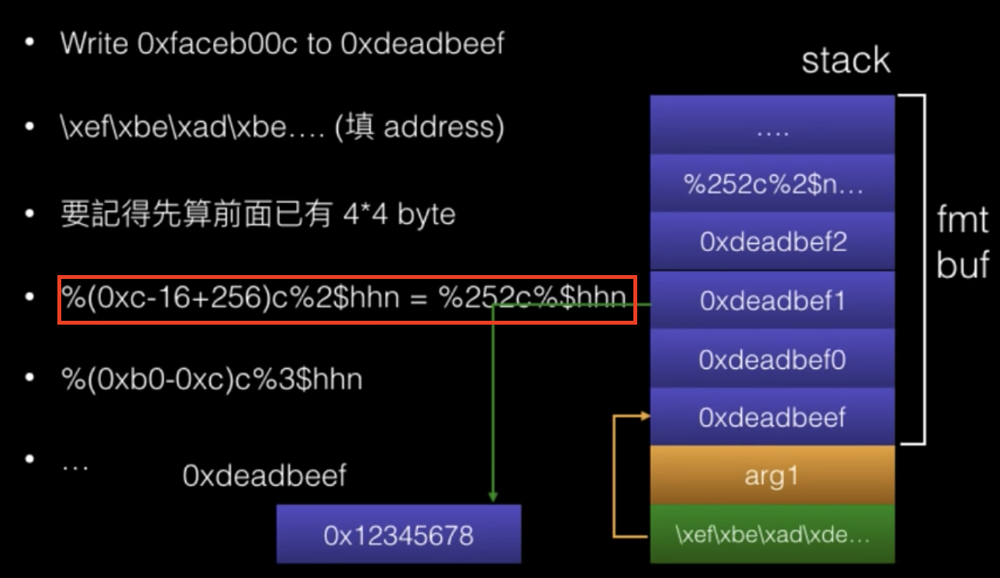
把address放在最前面会较好定位参数的个数, 但就要注意到address中没有NULL byte, format string只会到NULLbyte就结束了.
在有NULL byte的情况下, 一样可以利用之前的方式将address放后面, 做好padding即可.
lab craxme
首先找到写入的buffer位置
断在printf(buf)那里, 看printf buf在哪个位置
然后看printf buf位置到底离printf 参数差多远
数完后用aaaa%7$p就可以看到印出对不对
接下来就是magic塞进去
先把magic位置找出来
……
Advanced Trick
有时候并不会这么刚好format string的buf也刚好在stack上
在可以多次format string情况下, 我们可以用stack上现成的pointer来进行写值
- EBP chain
- argv chain
EBP chain:
- format string 的漏洞必须在main function 下两层中的function才可利用
- 利用第二层的ebp控制第一层的ebp这个pointer, 再利用第一层的ebp来写值
Argv chain:
- 做法非常类似ebp chain, 不过argv利用的是main function传递的argv来控制指标
- &argv->argv->argv[0]
- 但要注意的是argv[0]每次offset都不固定, 需要先leak来确认参数位置
Heap exploit
- Glib memory allocator Overview
- Use after Free
- Heap Overflow
- Detection in Glibc
Memory allocator:
dlmalloc - General purpose allocator
ptmalloc2 - glibc
jemalloc - Firefox
tcmalloc - chrome
后面两个结构用rb-tree红黑树构成
what is malloc?
- A dynamic memory allocator
- 可以更有效率的分配内存空间, 要用多少就分配多少, 不会造成内存空间的浪费
The workflow of malloc
第一次执行malloc
会根据你要的大小决定要用哪个system call跟kernel要内存空间
size>=128KB: 会直接调用mmap -> sys_mmap 跟kernel要一段内存空间
size<128KB: 会调用brk -> sys_brk 跟kernel要空间
无论一开始malloc多少空间<128KB都会kernel都会给132KB的heap segment(rw)这个部分称为main arena
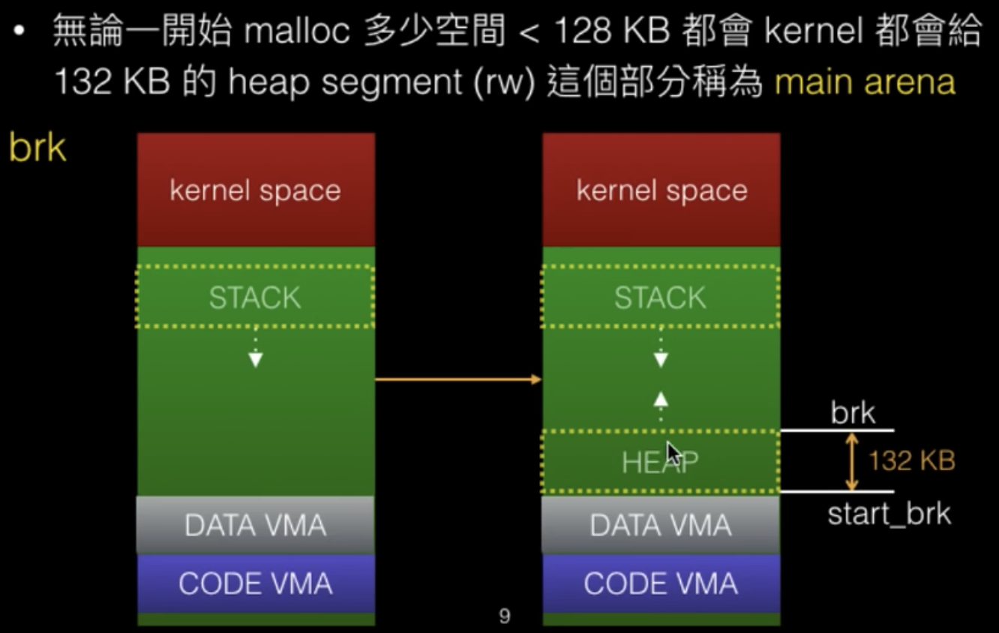
没有开ASLR的情况下, 从data段是直接和这个heap segment连在一起的,
有开ASLR的话, data段和这个heap segment会存在一个offset.
第二次执行malloc时, 只要分配出去的总内存空间大小不超过128KB, 则不会再执行system call跟系统要空间, 超过大小才会用brk来跟kernel要内存
即使将所有main arena所分配出去的空间free完, 也不会立即还给kernel
这时的内存空间将由glibc来管理
下面都以64位元 glibc-2.23为例, 换到32位则大多数的栏位大小都需除以二
Mechanism of glibc malloc:
Chunk:
- glibc在实作内存管理时的data structure
- 在malloc时所分配出去的空间即为一个chunk(最小为SIZE_T*4)
- SIZE_T = unsigned long int
- 32位元 4字节, 64位元 8字节
- chunk header (prev_size + size) + user data
- 如果该chunk被free则会将chunk加入名为bin的linked list
- 分为
- Allocated chunk
- Free chunk
- Top chunk
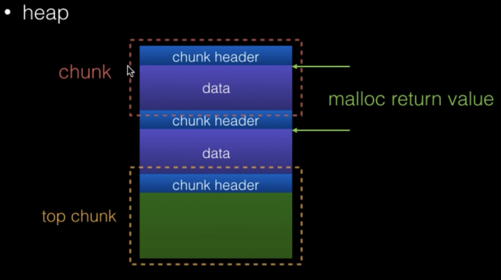
Allocated chunk
- prev_size
- 如果上一块的chunk是free的状态, 则该栏位则会存有上一块chunk的size(包括header)
- 这里指的上一块是在连续记忆体中的上一块
- size
- 该chunk的大小, 其中有三个flag(放在最低的3个bit, 如下图)
- PREV_INUSE(bit 0):上一块chunk是否不是freed
- IS_MMAPPED(bit 1): 该chunk是不是由mmap所分配的
- NON_MAIN_ARENA(bit 2): 是否不属于main arena
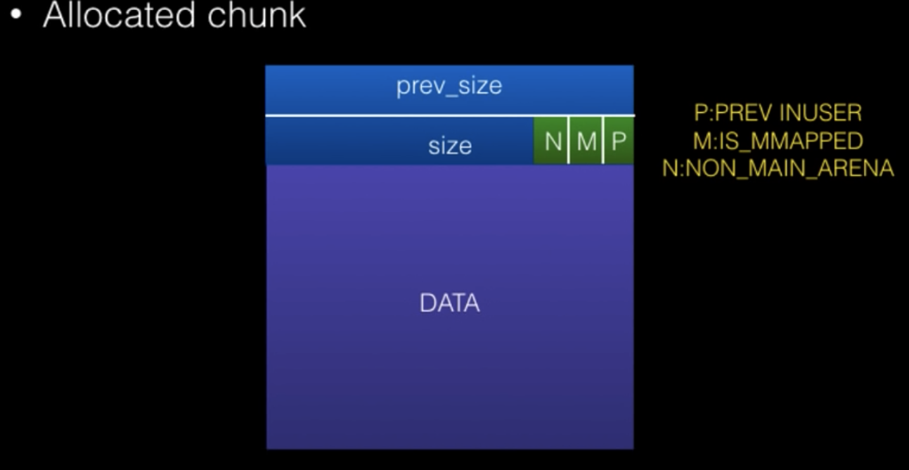
- 该chunk的大小, 其中有三个flag(放在最低的3个bit, 如下图)
Freed chunk
- prev_size
- size
- fd: point to next chunk (包含bin)
这边指的是linked list中的next chunk, 而非内存中的chunk
- bk: point to last/prev chunk (包含bin)
- 这边指的是linked list中的last chunk, 而非内存中的chunk
- fd_nextsize: point to next large chunk (不包含bin)
- bk_nextsize: point to last large chunk (不包含bin)
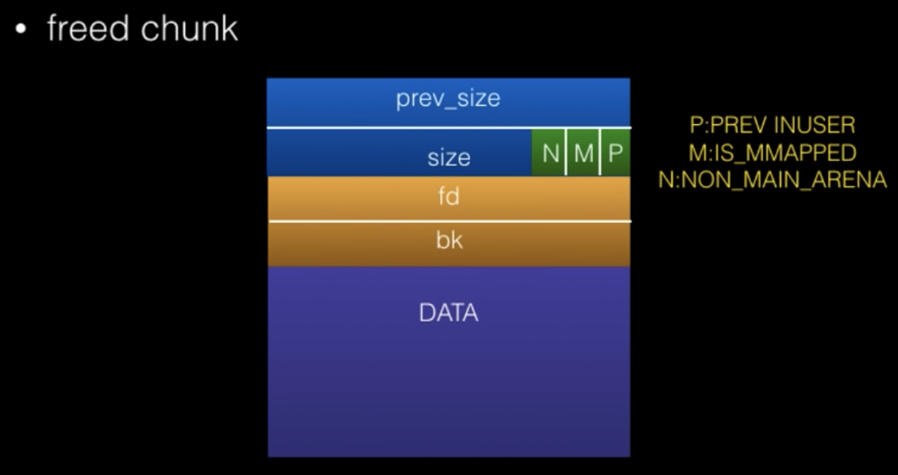
Top chunk
- 第一次malloc时就会将heap切成两块chunk, 第一块chunk就是分配出去的chunk, 剩下的空间视为top chunk, 之后要是分配空间不足时将会由top chunk切出去.
- prev_size
- size
- 显示top chunk还剩下多少空间
bin
- linked list
- 为了让malloc可以更快找到适合大小的chunk, 因此在free掉一个chunk时, 会把该chunk根据大小加入适合的bin中
- 根据大小一共会分为
- fast bin
- small bin
- large bin
- unsorted bin
fast bin
- a singly linked list
- chunk size < 144 byte (64位元, 32位元就是72)
- 不取消inuse flag
- 依据bin中所存的chunk大小, 在分为10个fast bin分别为size 0x20, 0x30, 0x40…
- LIFO
- 当下次malloc大小与这次free大小相同时, 会从相同的bin取出, 也就是会取到相同位置的chunk
- 其实是一个array, 存的都是linked list的header, 如下图
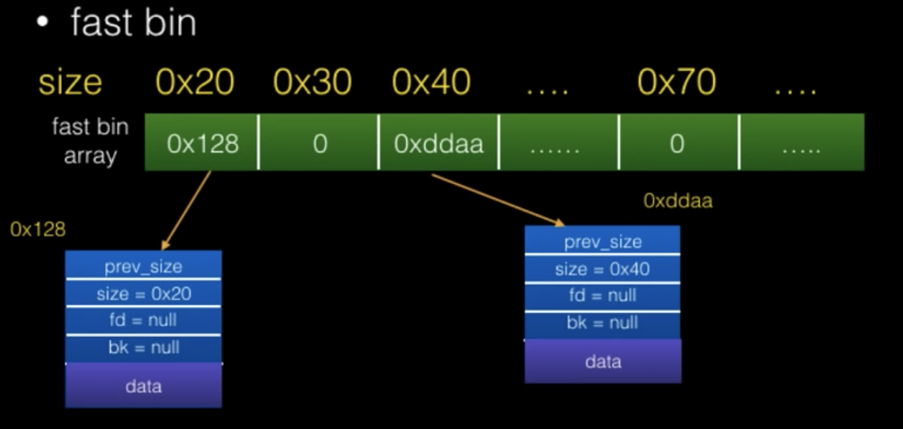
因为是singly, 所以bk不会有值
unsorted bin
- circular doubly linked list
- 当free的chunk大小大于等于144byte (也就是大于fast bin) 时, 为了效率, glibc并不会马上将chunk放到相对应的bin中, 就会先放到unsorted bin (相当于有个暂存cache的概念吧)
- 而下次malloc时将会先找找看unsorted bin中是否有适合的chunk, 找不到才会去对应的bin中寻找, 此时会顺便把unsorted bin的chunk放到对应的bin中, 但 small bin除外, 为了效率, 反而先从small bin找
small bin
- circular doubly linked list
- chunk size < 1024 byte
- FIFO
- 根据大小在分成62个大小不同的bin
- 0x20, 0x30…0x60, 0x70, 0x90,……0x1008
和fast bin有重叠部分, 某些情况下fastbin大小的chunk会放到small bin中, 但基本上都是放到fastbin
large bin
- circular doubly linked list (sorted list)
- chunk size >= 1024 byte
- freed chunk 多两个栏位 fd_nextsize, bk_nextsize指向前一块后一块large chunk
- 根据大小在分成63个bin但大小不再是一个固定大小增加
- 前32个bin为0x400+64*i
- 32-48bin为0x1380 + 512*j
- 依此类推
- 不再是每个bin中的chunk都固定, 每个bin中存着该范围内不同大小的bin并在存的过程中进行sort用来加快search的速度, 大的chunk会放在前面, 小的chunk会放在后面
- FIFO
last remainder chunk
- 在malloc一块chunk时, 如果有找到比较大的chunk可给user会做split将chunk切成两部分, 多的那一部分会成为一块chunk放到last remainder中, unsortbin也会存这一块
- 当下次malloc时, 如果last remainder chunk够大, 则会继续从last remainder切出来分配给user
main arena header
- malloc_state
- 存有所有的bin、top chunk等信息
- 位于libc的bss段中
malloc_workflow: github/libheap
Merge freed chunk
- 为了避免heap中存在太多支离破碎的chunk, 在free的时候会检查周围chunk 是否为free并进行合并
- 合并后会进行unlink去除bin中重复的chunk
- 执行free后unlink的条件是, 在cunk为非mmaped出来的chunk时
- 如果连续内存中下一块是top chunk, 且上一块是free chunk
- 最后合并到top chunk
- 如果连续内存中下一块不是top chunk
- 上一块是free chunk, 跟上一块合并
- 下一块是free chunk, 跟下一块合并
- 如果连续内存中下一块是top chunk, 且上一块是free chunk
- 合并流程
- 如果上一块是freed
- 合并上一块chunk, 并对上一块做unlink
- 如果下一块是
- top: 合并到top
- 一般chunk:
- freed: 合并下一块chunk, 并对下一块做unlink, 最后加入unsortbin
- inuse: 直接加入unsortbin
- 如果上一块是freed
Use after use
当free完之后, 并未将pointer设成null而继续使用该pointer, 该pointer被称为dangling pointer
根据use方式不同而有不同的行为, 可能造成任意位置读取或是任意位置写入, 进一步造成控制程序流程
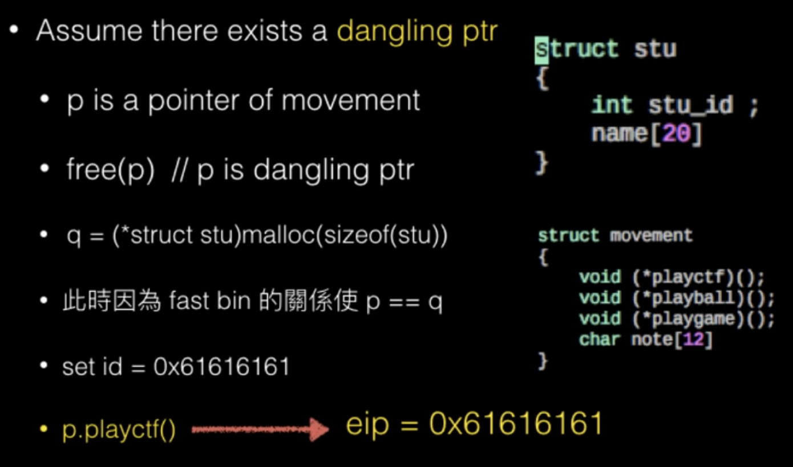
lab hacknote
先看代码看程序各函数作用
发现漏洞在del_note()
在对notelist里的node进行free后, 并没有把pointer清成null, 导致可以继续使用这个pointer
分配两个note(content大一点)序号0、序号1, 然后再按序号1、序号0次序del这两个note, 然后再分配一个note (content的size要设置和note一样), 然后再次利用之前del掉的序号1来print_note即可.
原理就是第三个分配的note, content就是序号1的note部分, 然后因为用户可以控制content, 就相当于控制了序号1的函数指针内容.
这里把content改成system@plt, 然后加上“;sh;”
相当于调用时, system(xxxx;sh;), 这里目前还没理解, 先记着这么用, 这里利用command injection, system会把参数里的分号后面部分的当一次参数来执行.
然后还有system@plt的地址最后有null byte所以需要加个6, 利用lazy binding机制重新resolve一次, 就可以解决null byte的问题了
Heap overflow
在heap段中发生的buffer overflow, 通常无法直接控制eip但可以利用盖下一个chunk header或者chunk结构, 并利用malloc时或free的造成的行为来间接达成任意位置写入, 进而控制eip
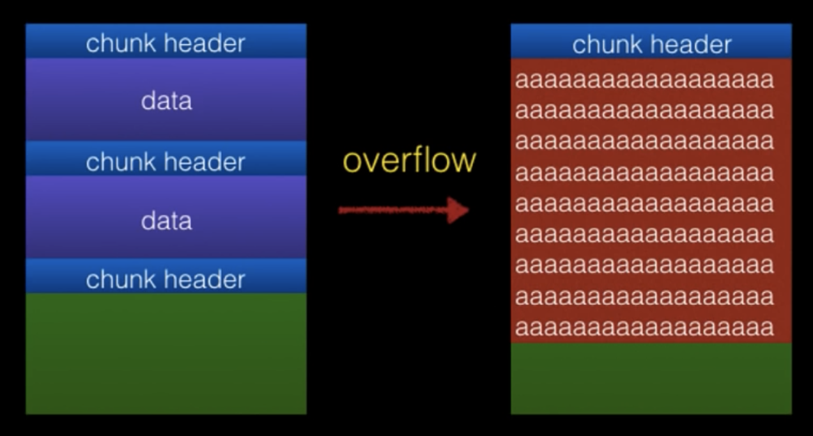
利用方式:
- unlink
- malloc maleficarum (比较古老的方式, 现在有5种, 只会介绍其中2种现在还可能用到的, 其他都被libc挡住了)
- overwrite fastbin
Unlink
透过overflow盖掉freed chunk中的, fd及bk, 再利用unlink中FD->bk=BK 及 BK->fd=FD 来更改任意内存位置
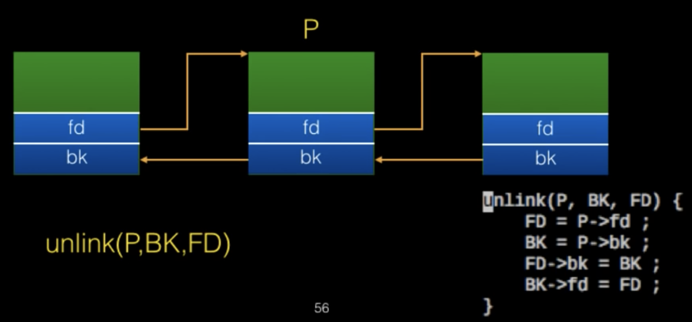
先讲古老用法, 没有任何保护下怎么做?
通过overflow, 改写第二块的fd、bk
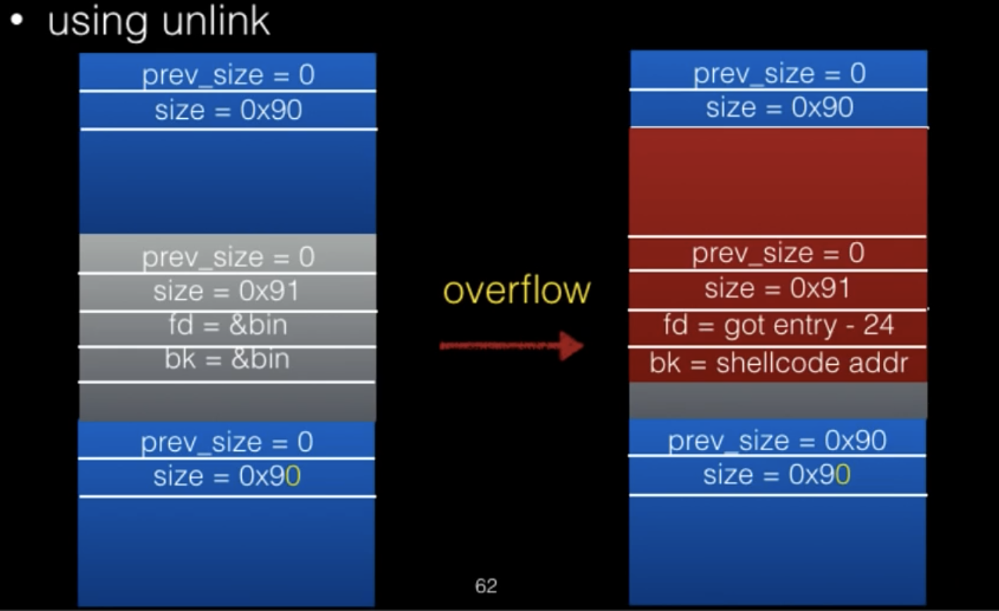
这个时候, 我们free(q), 就会执行unlink代码, 通过FD-bk=BK 这条代码我们就能把got entry改成shellcode address, 但是sc addr+16的地方会被改成got entry -24被破坏, 所以需要改shellcode改成jmp方式跳到后面去执行.
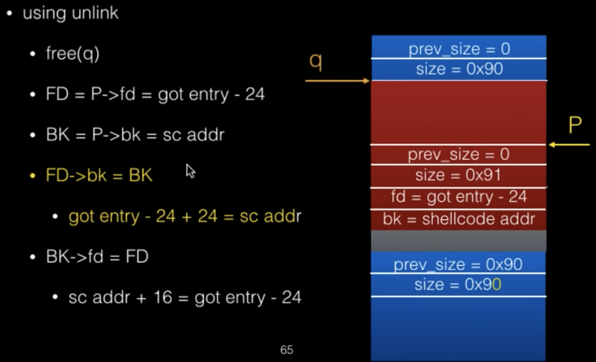
但现实是残酷的, 现代glibc中有各种针对chunk的检查及其他保护机制DEP(data execution prevention), 使得该办法无法使用
- double free detect
- invalid next size
- corrupted double linked list
- ……
detection in free
- 在做unlink时,
- corrupted double linked list
- 检查circular doubly linked list的完整性, 指出去再指回来必须指向自己, 否则就会显示corrupted double-linked list并中断程序
- P->bk->fd==P
- P->fd->bk==P
- 检查circular doubly linked list的完整性, 指出去再指回来必须指向自己, 否则就会显示corrupted double-linked list并中断程序
how to bypass the detection?
- 必须伪造chunk结构
- 必须找到指向伪造chunk的pointer及该pointer的address
- 因此能直接改的地方有限, 通常要间接去读取或写入任意位置
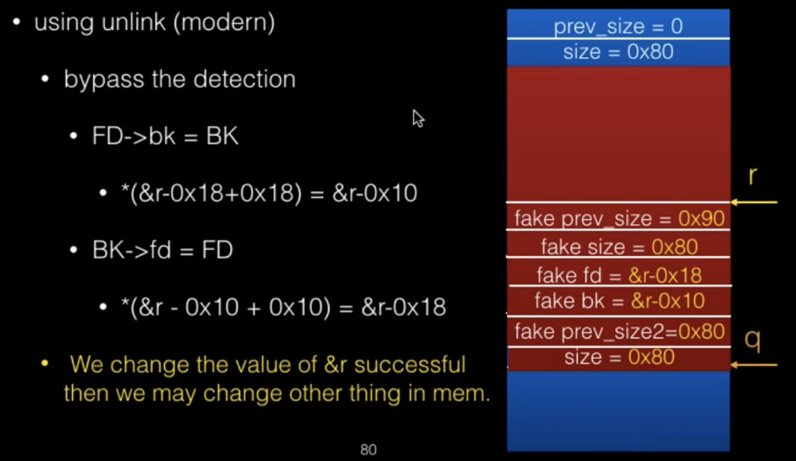
如图, fake fd满足check
free(q) 会去check r是不是freed, 是free, 然后就unlink(r)
FD=fake fd
BK=fake bk
能通过check:
r->fd->bk==r = *(&r-0x18+0x18)=r
r->bk->fd==r = *(&r-0x10+0x10)=r
之后就通过FD->bk=BK, BK->fd=FD做到改写value了
- 因此能直接改的地方有限, 通常要间接去读取或写入任意位置
- (&r)=&r-0x10
- (&r)=&r-0x18
通常这个r会是个data pointer, 然后就可以利用他来改变其他存在&r附近的pointer然后再利用这些pointer去造成任意位置读取及写入, 如果存在function pointer更可以直接控制eip.
Using malloc maleficarum:
- House of Mind
- House of Prime
- House of Spirit
- House of force
- House of lore
蛮古老提出来的5种, 现在只剩下house of spirit和house of force.
The House of Spirit
假设你现在有个stack overflow
- 这个stack overflow不够长盖到ret address时
- stack上面有要free的pointer, 利用overflow盖掉这个ptr指到我们伪造的chunk
- 必须针对prev_size及size做处理, 通过检查
- 比较常用的是 fastbin, 下次malloc时候就会取得伪造的chunk
- 还有个条件, 就是你要知道stack的位置
这个攻击可以做information leak, 也可加大stack overflow的距离, 但你必须要注意的是要先算出在stack中取下一块chunk的size是否合法为0x10的倍数, size的取决是很重要的, 因为他有个检查每块chunk都需要是0x10的倍数 (32bit为0x8的倍数)
The House of Force
- malloc从top分配空间时, top位置会以当前位置+分配chunk大小, 作为新的top位置
- nb=malloc时user所需大小
- new top=old top+nb+sizeof(chunk header)
- new top size=top_size - (nb+sizeof(chunk header))
- heap overflow盖过top chunk的size, 变成一个很大的值
- 下次malloc时, malloc一个很大的数字(nb), 然后arena header中的top chunk的位置会改变
- new top chunk = old top+nb+sizeof(header)
- nb可以是负数, 因为传进去会被自动转成很大的数字, 只要让fake size-nb>0就会让glibc以为top还有空间可以给, 因nv是负数, 所以top会往前, 造成overlap
- 这样下次malloc的位置将会是new top chunk的位置
Overwrite fastbin
- 类似house of spirit
- 如果可以改到fastbin的free chunk可以将fd改成fake chunk的位置, 只要符合size是符合fastbin就好, 因为在下一次malloc只会检查这项
- 下下次malloc(size-0x10)时, 就会取得该fake chunk的位置
- fake chunk可以是任意内存位置
lab bamboobox
先把代码各function看一遍, 发现漏洞在change_item(), 并没有对输入的长度做限制, 造成heap overflow.
house of force:
先分配第一块, 然后前面部分就是函数指针, 然后利用overflow, 把top chunk改到前面. 然后malloc nb, 成功改到前面
下次malloc, 就可以改到函数指针的部分, 这里把pointer改成magic函数.unlink:
分配第一块, 第二块
然后用第一块的heap overflow伪造假chunk, 并且覆盖下一块的header信息.
伪造的chunk:
size:0x41 因为要刚好等于下一块的位置, 1是前一块在use, 这样比较好控制
fd:ptr-0x18
bk:ptr-0x10
这里为了绕过检查
user data就只剩下0x20, 这里就再padding 0x20个a
之后是覆盖下一块的header, 让其对上一块伪造的chunk进行unlink.
prev_size=0x40
size=0x90
然后就是free 掉第二块, 导致对伪造的chunk进行unlink, 从而把ptr的前面位置改进了数组中的第一个元素, 这样就可以通过change来改写这个位置上的内容.
然后开始改写内容, 把数组的第一个元素改成got中的一个函数(atoi_got)
然后用show, 显示出atoi的lib位置, 然后通过offset算出system的lib位置
把atoi_got位置上的内容改成system_lib的位置
这样调用atoi的时候, 就是调用system, 然后输入“sh”就拿到shell了
credit: youtube/Angelboy